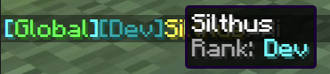
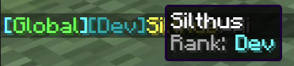

Channels¶
Channels are the core component of sChat and organize the message flood into tabs. The channels need to be configured in the config.yml under the channels section.
Every channel can have a range of settings that are explained below. Other plugins can extend that functionality and add custom settings.
Important
Global channels must be configured the same on all servers to work properly.
You can use the /schat reload command to reload your channels on the fly after you have made changes.
channels: # all channels must go under the channels section
my_channel: # every channel needs a unique key that must only contain letters, numbers, underscores or dashes
name: My Channel # the channel also needs a name that can be of any format and is parsed as a minimessage
settings:
... # all channel specific settings go here
name¶
next · minimessage · <key> ·
The name of the channel is displayed in the output of commands and the ui and parsed in the MiniMessage format.
Name Formatting
Use the format options to control the color of the name based on the state of the channel.
The active_color is only used if the channel name has no color.
settings¶
Every channel can have any or all of the following settings.
Note
Default values are marked with a .
priority¶
next · number · 100 ·
The priority of the channel controls its position in the tabs and commands.
The lower the priority value the higher up the channel appears.
Channels with the same priority are sorted by their name.
Example
The channels are sorted in the following way:
protected¶
next · boolean · false ·
Protected channels can only be joined by players that have the schat.channel.<key>.join permission.
For example the team channel requires the schat.channel.team.join permission.
join_permission¶
next · string · schat.channel.<key>.join ·
You can override the required join permission with this setting.
Info
This setting only works if protected: true is also set.
global¶
next · boolean · true ·
Messages that are sent to a global channel are forwarded with the configured messenger.
hidden¶
next · boolean · false ·
Hides the channel in commands, auto completion and listings.
Does not prevent joining or leaving the channel.
Players that are joined to the channel will see it in the channel tabs like all other channels.
auto_join¶
next · boolean · false ·
If enabled players will automatically join the channel when they join the server.
Only channels the player has access to will be auto joined.
Note
If the players leaves an auto_join channel and rejoins the server, the channel is joined again.
This option is therefor best combined with the forced setting.
forced¶
next · boolean · false ·
Forced channels cannot be left by players.
format¶
The following settings are all formatting options that can be applied to the view of the channel.
They go under the normal settings.format section.
active_color¶
Controls the color of the tab when it is active. This setting is only applied if the channel name has no color.
active_decoration¶
next · decoration · underlined ·
Controls the decoration of tab when it is active.
inactive_color¶
Controls the color of the tab when it is inactive.
inactive_decoration¶
next · decoration · underlined ·
Controls the decoration of tab when it is inactive. Use null to apply no decoration.
highlight_unread¶
next · boolean · true ·
Set to false to disable all unread message indicators on the tab.
unread_color¶
Controls the color of the tab when it contains unread messages.
unread_decoration¶
next · decoration · underlined ·
Controls the decoration of tab when it contains unread messages. Use null to apply no decoration.
message_format¶
next · minimessage ·
The message format controls how message are displayed for the given channel.
In addition to the PlacerholderAPI, the following placeholders are supported:
Tip
With sChat you have something completly new: Tabbed Chat Channels
This gives you the power to declutter your chat and remove the now unneeded [Channel] prefix from the messages.
| Placeholder | Description | Example | Since |
|---|---|---|---|
<id> |
The unique id of the message. | 66ad5e0d-ed28-4601-bcde-617b6729b5b3 |
next |
<timestamp> |
The timestamp when the message was sent. | 2021-05-01T12:10:55.412386200Z |
next |
<type> |
The type of the message. | SYSTEM or CHAT |
next |
<text> |
The text of the message. | Hi there! |
next |
<source_uuid> |
The ID of the message sender. | dd5c4f63-b5d9-43e7-9584-40b25494d7e8 |
next |
<source_name> |
The name of the message sender. | Silthus |
next |
<source_display_name> |
The formatted display or nickname of the sender. | &aSilthus |
next |
<channel_key> |
The unique key of the channel. | global |
next |
<channel_display_name> |
The formatted name of the channel. | Global |
next |
Example with Name Hover and PlaceholderAPI
message_format: "<aqua>[<channel_name>]</aqua>%vault_prefix%<hover:show_text:'<source_display_name>\n<gray>Rank: <aqua>%vault_rank%'><source_display_name></hover>%vault_suffix%<gray>: <text>"
 

self_message_format¶
next · Experimental · minimessage ·
Controls the format of messages where the viewer is also the sender of the message. Behaves exactly the same as message_format and exposes identical placeholders.
Created: February 24, 2022